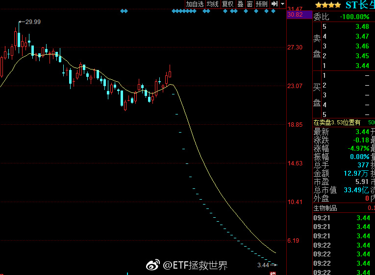

中央空调：大金 三菱电机 日立 东芝 特灵 三菱重工 麦克维尔 美的 格力。//@ETF拯救世界:回复@凯文山姆日记:窗式空调我看排行是LG 通用家电 海尔 北极牌 费里希 格力 肯摩尔，都什么鬼。//@凯文山姆日记:空调是啥情况？@ETF拯救世界:最近看电器，之前一直感觉国产白电已经领先世界了。怎么一看某排行排在前面的基本还全是日韩的货啊。。洗衣机 LG 松下 三星 日立 博世 西门子冰箱 松下 LG 日立 三星 夏普 三菱 东芝 博世怎么回事。是排行榜不行还是咱们的机器不行。
回复@凯文山姆日记:窗式空调我看排行是LG 通用家电 海尔 北极牌 费里希 格力 肯摩尔，都什么鬼。//@凯文山姆日记:空调是啥情况？@ETF拯救世界:最近看电器，之前一直感觉国产白电已经领先世界了。怎么一看某排行排在前面的基本还全是日韩的货啊。。洗衣机 LG 松下 三星 日立 博世 西门子冰箱 松下 LG 日立 三星 夏普 三菱 东芝 博世怎么回事。是排行榜不行还是咱们的机器不行。
最近看电器，之前一直感觉国产白电已经领先世界了。怎么一看某排行排在前面的基本还全是日韩的货啊。。洗衣机 LG 松下 三星 日立 博世 西门子冰箱 松下 LG 日立 三星 夏普 三菱 东芝 博世怎么回事。是排行榜不行还是咱们的机器不行。
回复@突然想要换名字:中证红利最好增速也就在10%左右。它基本不会太高增长。因为大量分红的企业已经是成熟期了。另外，它长期估值低，基本上也不可能是高成长股票组成的。。//@突然想要换名字:我猜红利应该是最好的吧？@ETF拯救世界:截至今日，养老产业80家成分股中有33家披露半年报。33家中只有5家利润下降。静态PEG已经=1……当然剩下的40多家业绩不会这么好。我估计整体增速在15%+。还有8天。
回复@牡丹亭集小言:这就是群众基础。不要怀疑牛市会不会来，要相信国人的赌性。你信不信，我信。他们只是在等待50%的涨幅……//@牡丹亭集小言:办公室里的讨论变成了，不要买房，现在拿钱买股票闭着眼睛买都能躺赢@ETF拯救世界:5月10号还在历史新高，今年涨幅超过100%。谁能想到3个月过去持有的话市值还剩10%。还卖不出去。炒股风险太大了。不重仓赚不了什么钱，重仓了踩雷一辈子就这样了。。 
更新：500是330家公布，整体保持15%+。A股有2/3已经公布，整体维持在12%+。//@ETF拯救世界:回复@国民偶像superIQer:500目前280家公布，27%业绩下降，增速在15%+。估计全出来以后在11左右吧。//@国民偶像superIQer:益达 500的增速预计有多少？@ETF拯救世界:从整个A股看，目前公布半年报的1900多家里面，有1/3业绩下滑。总体增速保持在13%+。估计全部公布完毕后也就8%-10%。这个速度也算是合理的。
更新：58家公布，19家下滑，整体增速下降至13%+。果然是越往后公布越烂。医药保持15%+。//@ETF拯救世界:更新：41家企业公布，8家下滑，依然保持20%+。医药157家公布，37家下滑，15%+//@ETF拯救世界:更新：37家公布业绩，6家下滑。多了一个华谊。整体增速依然维持在20%+。@ETF拯救世界:截至今日，养老产业80家成分股中有33家披露半年报。33家中只有5家利润下降。静态PEG已经=1……当然剩下的40多家业绩不会这么好。我估计整体增速在15%+。还有8天。